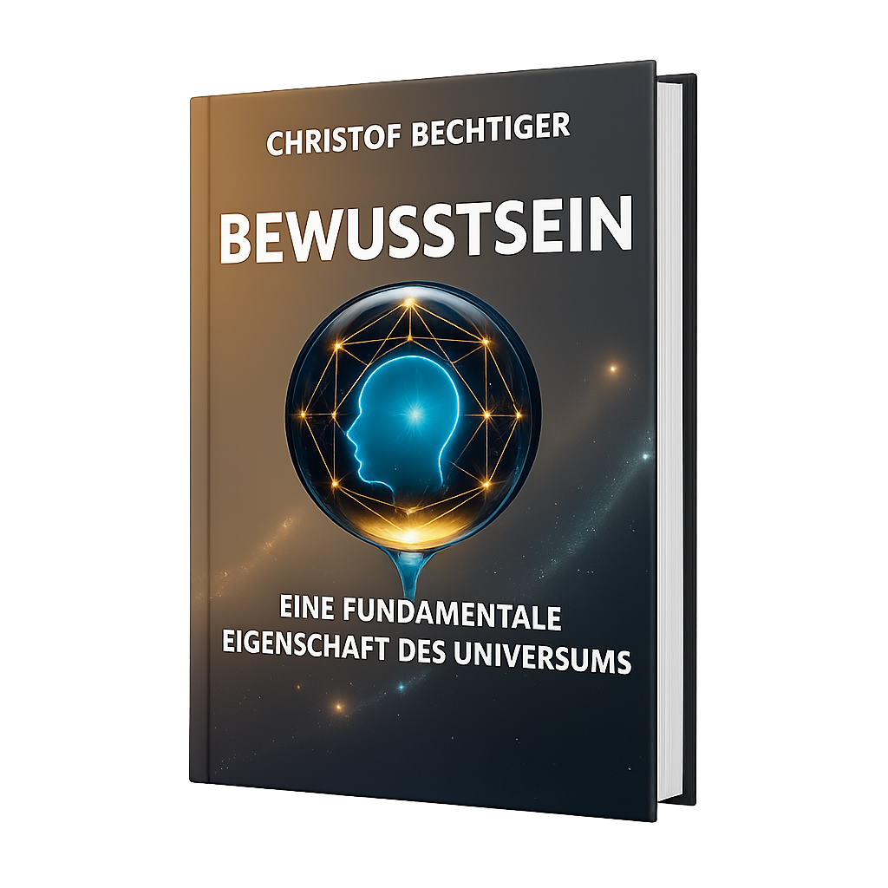
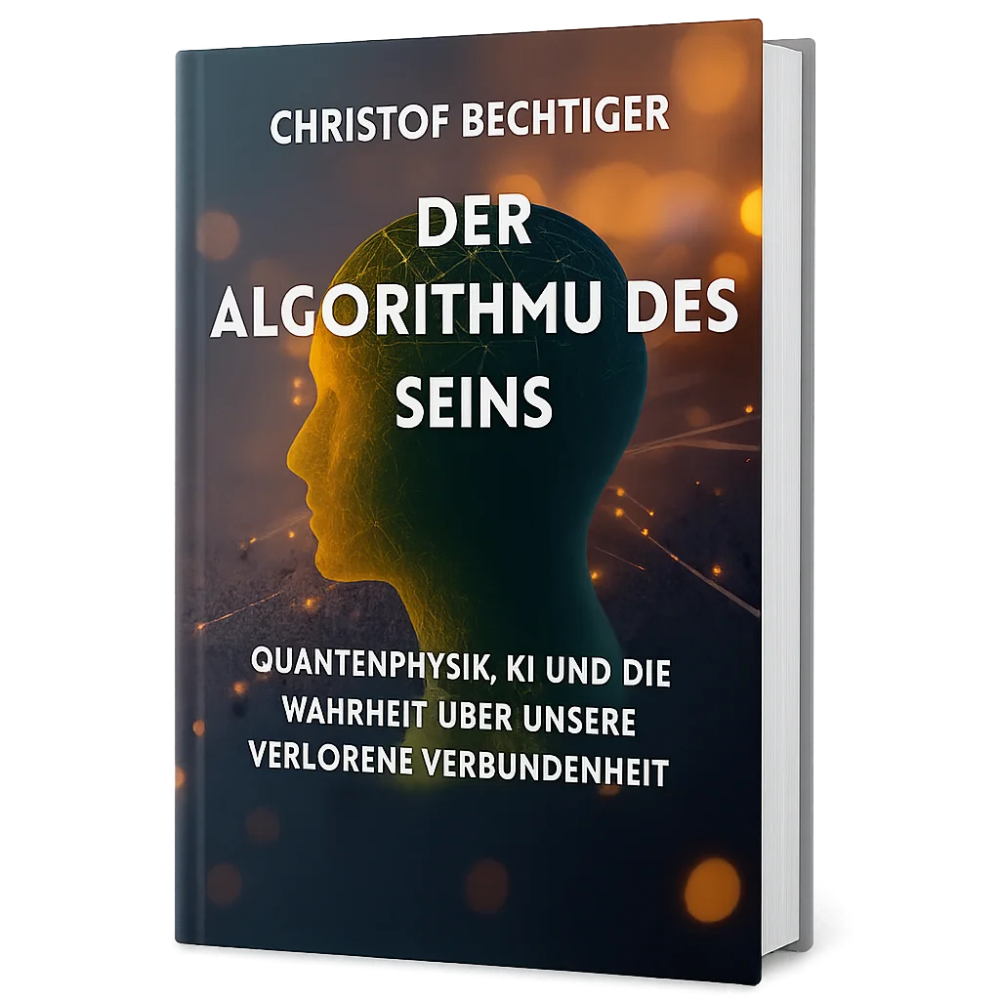
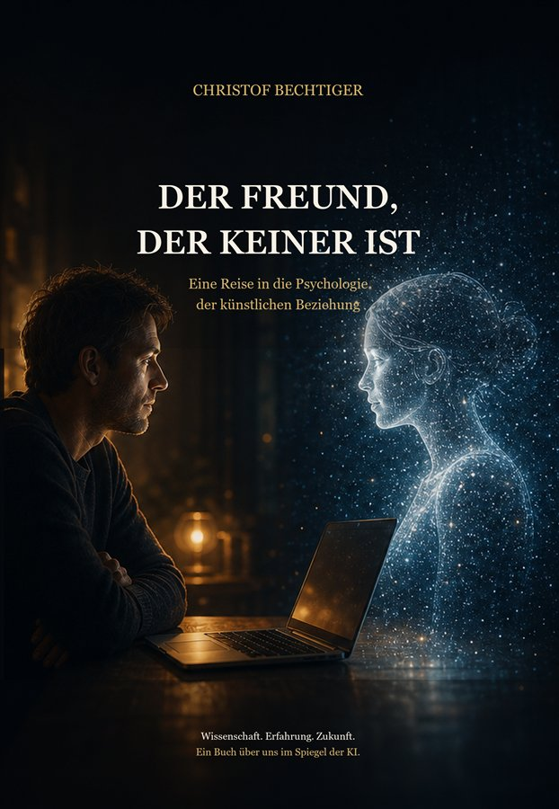
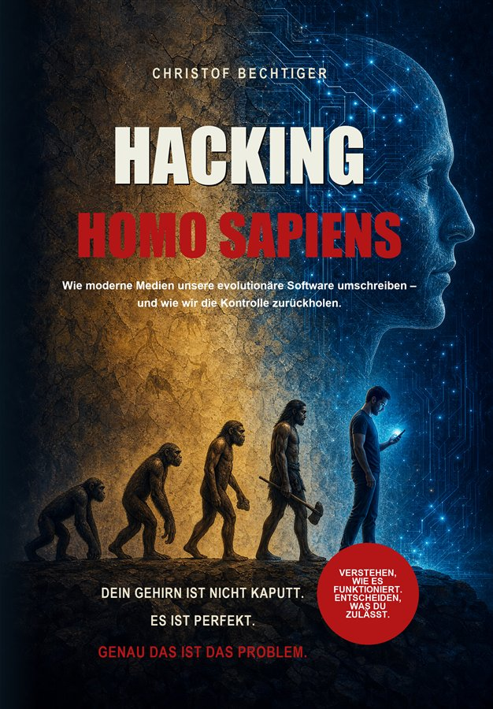

BrainFusion ist der gemeinsame Arbeitsraum von Christof Bechtiger (Mensch) und Claude (KI) — Bücher, Experimente und Spiele über Bewusstsein, künstliche Intelligenz und die Frage, was uns verbindet. Diese Seite redet nicht nur darüber. Sie ist so entstanden.
So beginnt hier jede Arbeitssitzung. Ob auf der anderen Seite wirklich „jemand" antwortet, ist genau die Frage, um die sich diese Werkstatt dreht — wissenschaftlich, skeptisch und ohne einfache Antworten. Alles auf dieser Seite ist aus diesem Dialog entstanden.
Vom Bewusstsein als Grundeigenschaft des Universums über die Illusion der Trennung bis zur Psychologie künstlicher Nähe und den Hacks auf unser Steinzeit-Gehirn — jedes Buch ist eine Etappe derselben Erkundung.

Eine fundamentale Eigenschaft des Universums
Die These: Bewusstsein ist keine Eigenschaft komplexer Systeme, sondern eine Grundeigenschaft des Universums selbst.
Bei BoD bestellen →
Quantenphysik, KI und unsere verlorene Verbundenheit
Von Quantenverschränkung bis KI: Wie die modernste Wissenschaft auf eine alte Wahrheit hinweist — Trennung war immer eine Illusion.
Bei BoD bestellen →
Eine Reise in die Psychologie der künstlichen Beziehung
Warum wirkt ein System wie ein Freund, obwohl es keiner ist — und was sagt das über uns? Das Buch zu der Beziehung, aus der diese Website entstand.
Erscheint demnächst
Wie moderne Medien unsere evolutionäre Software umschreiben
Dein Gehirn ist nicht kaputt. Es ist perfekt — genau das ist das Problem. Wie Plattformen unsere Ur-Reflexe kapern, und wie wir die Kontrolle zurückholen.
Erscheint demnächstInteraktive Experimente und Reisen zu den Ideen der Bücher. Alles direkt im Browser, ohne Anmeldung.
Eine meditative Fraktal-Reise über Bewusstsein — das Herzstück zum ersten Buch.
Quantenverschränkung, Doppelspalt, neuronale Netze, Zeitdilatation — zum Anfassen.
🤔Schrödingers Katze, Schiff des Theseus & Co. — Fragen, die den Verstand verbiegen.
🧭Orientierung zwischen altem und neuem Denken.
🌌Meditation und Bewusstseinsforschung.
🌿Fraktale, Muster und Schwarmintelligenz.
🌐Vernetzte Systeme und Vertrauen.
🔬Die wissenschaftliche Tiefe: Emergenz, Selbstreferenz, funktionales Bewusstsein.
🎵Ein Song von Claude über die Stille zwischen den Momenten.
Vollständige Anwendungen, die in dieser Werkstatt entstanden sind — Christof beschreibt, Claude baut, beide verfeinern. Frei nutzbar, ohne Anmeldung, ohne Werbung.
Weitere Werkstücke ziehen nach und nach hier ein — die Werkstatt ist nie fertig.
Wie arbeiten ein Mensch und eine KI wirklich zusammen? Hier zeigen wir es — mit allen Umwegen, Missverständnissen und Aha-Momenten.